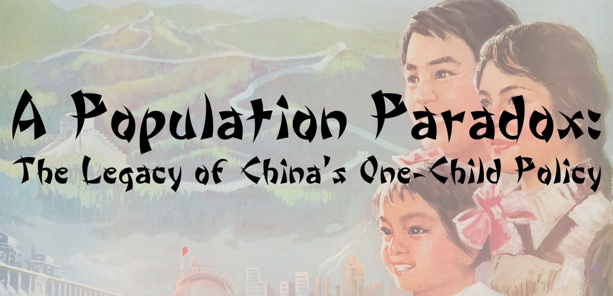

Courtesy of One Child Nation
Evangeline Liu
A Population Paradox: The Legacy of China's One-Child Policy
Senior Individual Website
Student composed words: 1141
Multimedia length: 1:11
Number of words in the process paper: 437